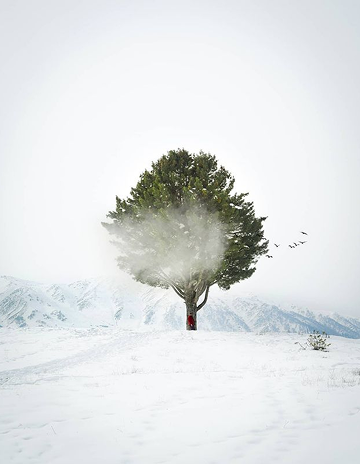

A Winter Morning in Gulmarg
As I walked through the snow, puffs of breath escaping my mouth, a biting wind pierced my cheeks. I hadn't planned anything for that day except for a quiet stroll during winter and my camera. There is something about cold weather that strips everything down to its core, bare ZNo fancy colors to distract everything is just the truth.
I then spotted a tree all by itself in a vast field of untouched snow. I gave no leaves or applause and only bare strong branches stretched upwards as if it was reaching for the clouds.